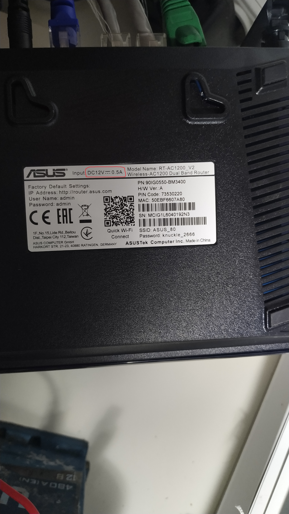

Технологія GPON:
За допомогою технології Gigabit Passive Optical Network можна користуватися домашнім інтернетом. Треба лише підключити свій роутер та оптичний термінал до повербанку. Так твоя мережа може працювати без електроенергії до 12 годин. Усе завдяки тому, що провайдери підтримують живлення систем генераторами. Тому доступ до Wi-Fi буде навіть тоді, коли у твоєму будинку вимкнули світло. Залишиться лише правильно під’єднатися.
Для підключення Інтернету від 12в АКБ
- Роутер 12в
- Оптичний Термінал 12в
- Два дроти DC розміром 5,5 мм х 2,1 мм;
- 12в Аккумулятор
- Дві клеми на АКБ
- ізоляційна стрічка (синя)
Щоб дізнатися що у Вас роутр має вихідну напругу 12в, треба перегорнути роутер та на шильдику (наклійка) знайти (Input) див мал:
Далі беремо Dc дроти та скручуємо їх між собою, дві клеми для АКБ (забажанням), та запитуемо роутер та термінал Важливо! запам'ятати (+) та (-). як на малюнку:
/\ Хочу до гори
Для підключення Інтернету від Повербанку
- Роутер 5-9в
- Оптичний Термінал 5-9в
- Два USB дроти DC-5в-9в, розміром 5,5 мм х 2,1 мм;
- Кілька повербанків: один використовуйте для роутера, а другий — для оптичного термінала.
- ізоляційна стрічка (синя)
Якщо у Вас роутер та термінал мають напругу 5в чи 9в, то нам потрібно під'єднати повербанк до Dc-дрота 5в чи 9в та до роутера чи терміналу дивись напругу на шильдику.
/\ Хочу до гори
Для підключення Інтернету від Повербанку #2
- Роутер 9в
- Оптичний Термінал 9в
- Два дроти DC, розміром 5,5 мм х 2,1 мм;
- Два дроти USB
- Два Dc-Dc перетворювача з 5в на 9в
- Паяльник
- Кілька повербанків: один використовуйте для роутера, а другий — для оптичного термінала.
- ізоляційна стрічка (синя)
Якщо у Вас роутер та термінал мають напругу тільки 9в та немає дрота USB-Dc 9в, то нам потрібно спаяти дроти DC з Dc-Dc перетворювачем та USB дротем. Під'єднати повербанк до USB-дрота та до роутера чи терміналу дивись напругу на шильдику.